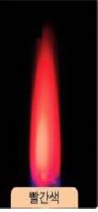
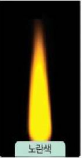
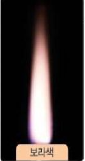
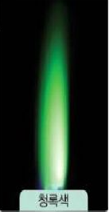
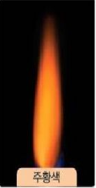
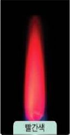
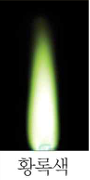
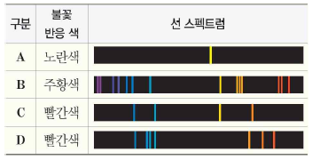

I. 물질의 구성
1. 물질의 기본 성분
01. 물질을 이루는 기본 성분
- 물질을 이루는 기본 성분을 라고 한다.
- 지금까지 알려진 원소의 종류는 가지 이다.
- 물을 이루는 원소는 ?
- 원소는 다른 물질로 분해( 된다, 되지 않는다).
- 원소의 종류는 가지이지만 물질의 종류는 훨씬 더 많다. 그 까닭은 무엇인지 설명해 보자.
원소, 118, 수소 산소, 되지 않는다.
원소의 종류는 제한적이지만 조합되는 원소의 종류와 수에 따라 다양한 종류의 물질이 만들어 질 수 있기 때문이다.
02. 원소를 확인하는 방법
- 원소의 불꽃 반응 - 원소 이름을 쓰세요.
|  |  |  |  |  |  |  |
| 빨간색 | 노란색 | 보라색 | 청록색 | 주황색 | 빨간색 | 황록색 |
- 원소를 구별하는 다른 방법 - 스펙트럼 비교하기
 |
|

| A | B | C | D |
- 염화 나트륨과 질산 나트륨의 불꽃 반응 색은( 같고, 다르고),염화 나트륨과 염화 칼슘의 불꽃 반응색은 (같다 다르다).
- 원소의 선 스펙트럼은 원소의 에 따라 나타나는 선의 색깔, 위치,굵기,개수 등이 다르다.
- 요리를 하다가 음식의 간을 맞추려고 뿌린 소금이 가스 불꽃에 닿았더니 불꽃색이 노란색으로 변하였다. 그 까닭은 무엇인지 설명해 보자.
스스로 정리하기
#. 원소에 대한 설명으로 옳은 것만을 < 보기 > 에서 있는 대로 고른 것은?
... ...............................
정답 : 4
해설 : 원소는 자연에서 발견된 것과 인공적으로 만들어진 것으로 구성
출처 : 2021년 1학기 중간고사
#. 원소에 대한 설명으로 옳은 것만을 < 보기 > 에서 있는 대로 고른 것은?
< 보 기 >
㉠ 모든 물질은 원소로 이루어져 있다.
㉡ 자연에서 발견된 118개의 원소로 구성되어 있다.
㉢ 원소마다 고유의 선스펙트럼을 가지고 있다.
① ㉠
② ㉡
③ ㉠, ㉡
④ ㉠, ㉢
⑤ ㉠, ㉡, ㉢
정답 : 4
해설 : 원소는 자연에서 발견된 것과 인공적으로 만들어진 것으로 구성
출처 : 2021년 1학기 중간고사
2. 원자
3. 분자
4. 이온